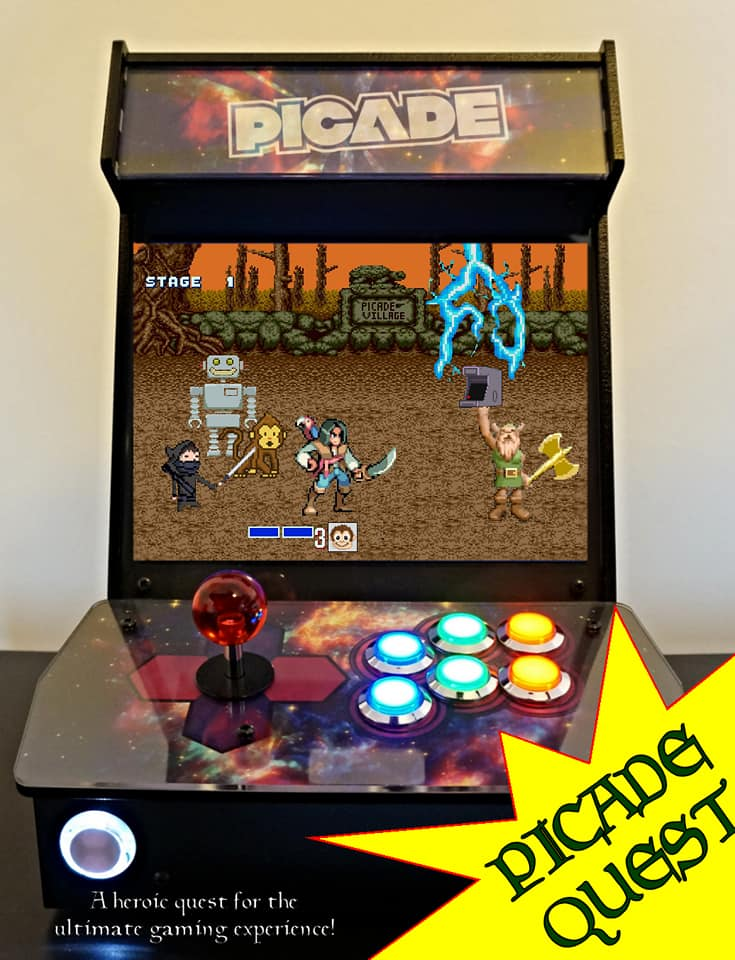
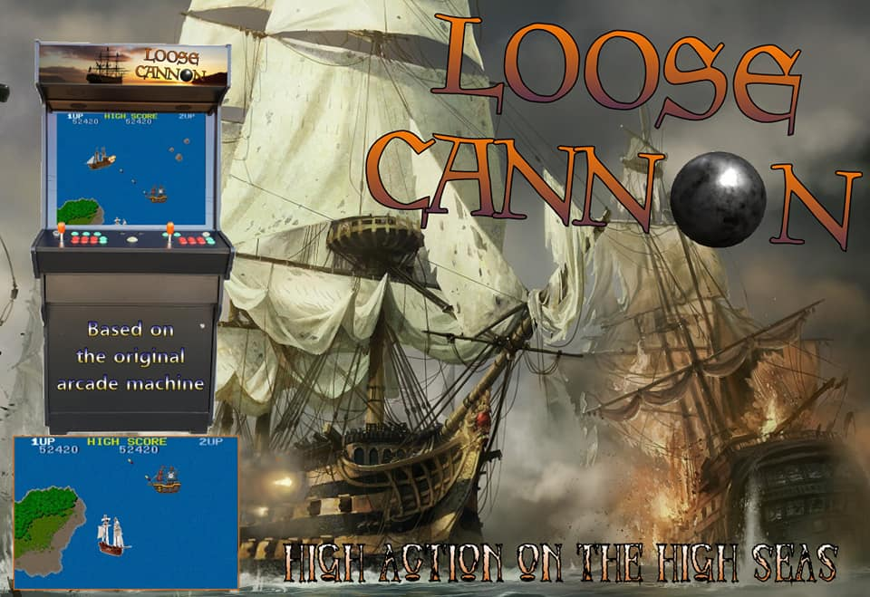
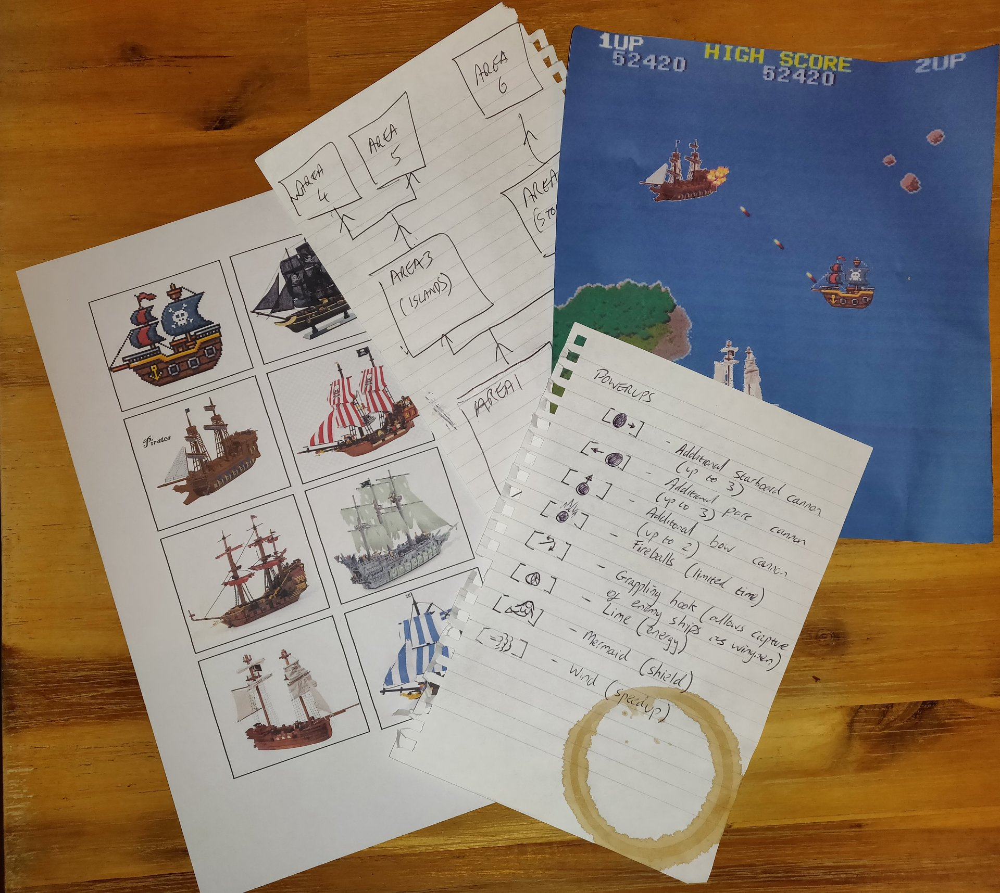
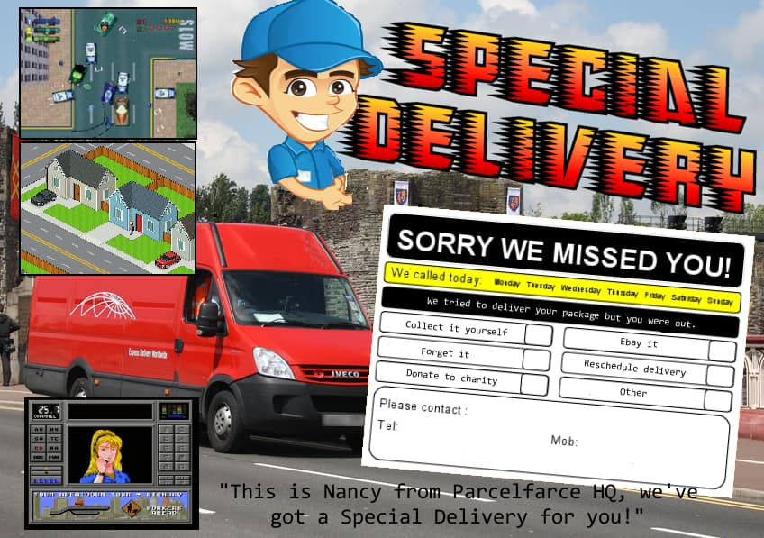
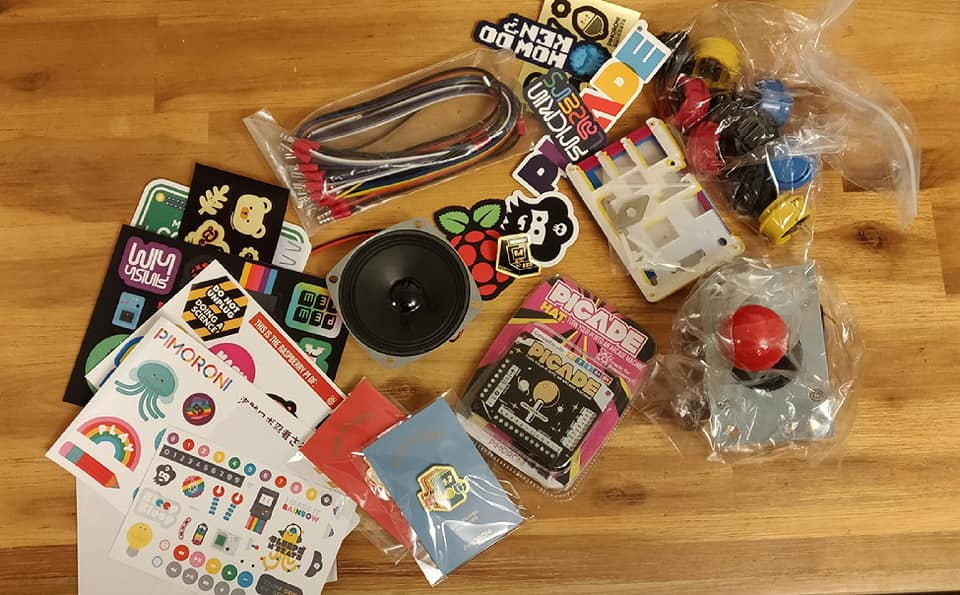

Introduction
In August 2018 Pimoroni ran a competition to publicise the launch of it's brand new PICADE model. The competition requirement was to design a new retro-style game, which could be played on Pimoroni's new cabinet.. My entries were: PICADE QUEST
Choose from four player characters with profoundly different abilities - Pirate (expert swordsman, greater damage), Monkey (extra speed, outmaneuver enemies), Robot (extra health, take additional damage), Ninja (stealth ability, creep up on enemies) on their quest to discover and liberate the ultimate retro gaming experience - the PICADE!
The heroes must battle through several different lands on their way to the PICADE village, where the evil warlord N.Tendo has confiscated all the existing units.
Along the way encounter some familiar (but not trademark infringing) characters from throughout the history of gaming. Some may help you on your quest, while some may hinder.
A classic hack-and-slash game, for a new generation of retro-gamers!

LOOSE CANNON
High Action on the High Seas
Avast me hearties! Take control of the Phat Pig, a fearless Man-o-War on a high sea adventure. With a similar control mechanism to Time Pilot, battle your way through seven unique seas. Encounter enemy galleons, rival pirate ships, ghost ships, fire ships and others. Collect a range of power-ups to increase your firepower, including port and starboard side-shots (up to 3 each side), increase forward firepower, fireball upgrade, wind (speedup), mermaids (shield), limes (health boost) and the grappling hook (forcible press-gang up to two enemy ships as escorts). Receive a rating from Landlubber to Pirate Captain, depending on your score. In later levels avoid running aground on islands, navigate fog, and avoid contact with the deadly ghost-ships. So batten down the hatches, weigh anchor, hoist the mizzen and prepare for High Action on the High Seas!


SPECIAL DELIVERY
"Sorry we missed you!"
Parcelfarce has a new driver! It's your first day on the job and Nancy from Parcelfarce HQ gives you your first assignment! Drive across town (in top-down view) as fast as you can while the cash ticks down, lose more cash for damaging the delivery van in collisions but earn extra by wiping out cycle couriers. In later levels beware of rival delivery drivers attempts who try to to force you to crash. Get to the delivery address before the cash counter hits zero or it's back to HQ with a strike on your employment record. Once at the destination the game switches to property view. Get a "Sorry we missed you!" yellow card in the letterbox without being caught by the householder(s). Succeed and the cash for the delivery is all yours, fail and it's back to HQ for another job with no payment and a strike on your record. Three strikes on your record and it's GAME OVER.
Do you have what it takes to be a SPECIAL DELIVERY driver?

Sadly none of these won the star prize of a FREE Picade cabinet, but I did receive this interesting collection of components:

Pimoroni Competition Goodies
I resolved to build my own PICADE cabinet from these components and whatever spare parts were lying around from previous projects.
| ||
|